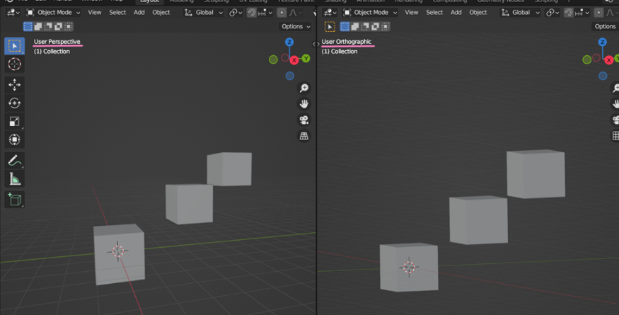
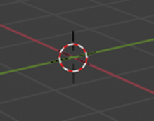
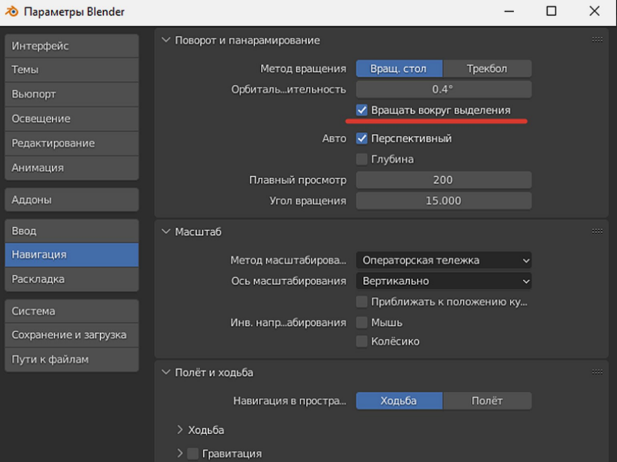

НАВИГАЦИЯ
Итак, вы установили блендер и готовы приступить к работе
Для начала, давайте обсудим проекцию камеры во Viewport. Viewport – это основная рабочая область, в которой отображаются наши объекты. В Blender существуют два типа проекции – ортографическая и перспективная. На картинке показана разница отображения с одного угла.

Мы привыкли к перспективному отображению объектов, когда удалённые от нас объекты кажутся меньше. В такой перспективе и происходит рендер объекта. Ортографическая проекция часто кажется немного странной на первый взгляд, потому что объекты остаются одного размера независимо от расстояния. Тем не менее советую в работе использовать именно ортографический режим, потому что он обеспечивает более «техническое» понимание сцены, что упрощает моделирование и оценку пропорций. Переключение режимов быстро осуществляется с помощью Numpad5.
По умолчанию в блендере во Viewport находится 3 объекта – куб, камера и свет. Навигация по рабочему полю происходит благодаря зажатию колесика мыши. По умолчанию вращение осуществляется вокруг 3D-курсора.

По умолчанию вращение происходит вокруг условной точки в пространстве. Чтобы сделать центром выбранный объект, заходим во вкладку Правка — Настройки — Навигация (Edit — Preferences — Navigation) и отмечаем галочкой пункт Вращать вокруг выделения (Orbit Around Selection). Это сильно упростит дальнейшую работу.

Зажатие shift и колесика мыши одновременно позволяют перемещаться во Viewport.